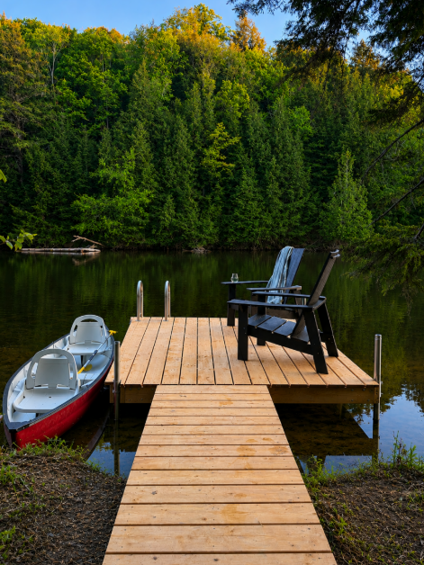
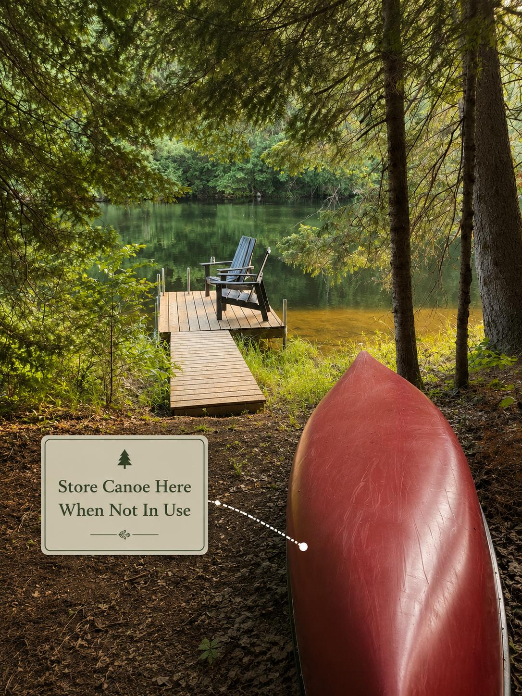
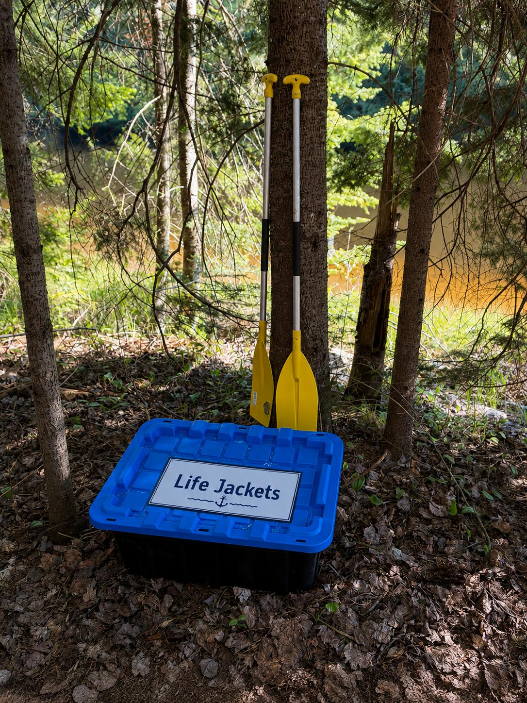

Waterfront Access
Enjoy exclusive access to the Muskoka River during your stay. The waterfront area features a private dock, lounge chairs, and a canoe for exploring the river.
Getting to the waterfront
The waterfront is approximately a 5-minute walk from the Aux Box.
Paddles, canoe, and life jackets
Before Leaving the Waterfront
Before heading back up the trail, take a moment to return the canoe gear and leave the dock area in the same condition you found it.

Return the canoe
Return the canoe to its designated storage location when you are finished at the dock.

Return paddles and life jackets
Place all paddles and life jackets back into the storage bin before heading up the trail.
Leave the dock area tidy
Leave the dock area tidy and in the same condition you found it.
Important information and safety
- Use the waterfront, dock, and canoe at your own risk.
- River conditions can vary throughout the year.
- While the Muskoka River is typically calm, water levels and current may be stronger during certain seasons or following significant rainfall.
- If you are inexperienced with canoeing, we recommend paddling upstream from the dock first so the return trip is easier with the current.
- The owners of the Aux Box assume no liability for injuries, accidents, or losses resulting from use of the waterfront, dock, canoe, or surrounding area.